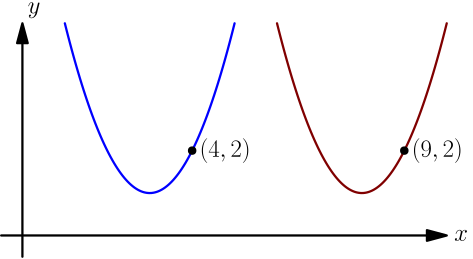
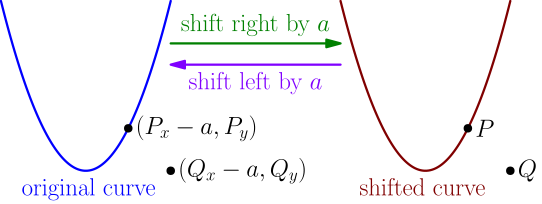
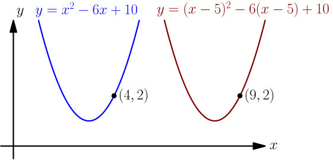
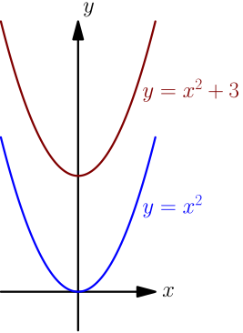

Shifting¶
When I say that a curve has been shifted right by some positive number $a$, I mean that the shifted curve consists of the points of the original curve, with $a$ added to the $x$ component of each point. For example, shifting the below blue parabola right by $5$ gives the red parabola:

Let's shift any curve right by some positive number $a$. How to figure out whether a point $P=(P_x,P_y)$ is on the shifted curve? We start by shifting the point $P$ left by $a$; this of course gives the point $(P_x-a, P_y)$. Next, we notice that $P$ is on the shifted curve if and only if the left-shifted point is on the original curve.

If the original curve is given with an equation, then the point $(P_x-a, P_y)$ is on that curve if and only if replacing $x$ with $P_x-a$ and replacing $y$ with $P_y$ makes the equation true.
To find the equation of the shifted curve, we simply need to do this with the point $(x,y)$; it is on the shifted curve if and only if $(x-a, y)$ is a point on the original curve, which is true if and only if replacing $x$ with $x-a$ (and replacing $y$ with $y$, which does nothing) satisfies the equation of the original curve.
If $a$ is a positive number, then replacing $x$ with $x-a$ in the equation of a curve shifts the curve right by $a$.
It feels a bit weird that subtracting moves the curve right. To make it feel intuitive, here's the same picture as in the beginning of this page, with the parabola equations shown. Try plugging in the points $(4,2)$ and $(9,2)$ to the equations to see how replacing $x$ with $x-5$ really shifts right.

How to shift a curve left? Shifting left is cancelled by shifting right by the same amount, and in fact, shifting left is the only thing that can be cancelled by shifting right. So, if we find a way to do something to a curve so that shifting the result right gives the original curve, then we have found a way to shift left.
If we first replace $x$ with $x + a$ and then replace $x$ with $x - a$, then all occurences of $x$ become first $x+a$ and then $(x-a)+a$; that's same as just $x$, so we end up doing nothing. By the above result, replacing $x$ with $x-a$ shifts the curve right by $a$. So, we did something by replacing $x$ with $x+a$, and then shifted right to get the original curve back.
If $a$ is a positive number, then replacing $x$ with $x+a$ in the equation of a curve shifts the curve left by $a$.
If $a$ is negative, then we can write $a = -\abs{a}$. Now $$ x-a = x - (-\abs{a}) = x + \abs{a}, $$ so replacing $x$ with $x-a$ is same as replacing $x$ with $x+\abs{a}$. In this sense, shifting a curve right by a negative number $a$ is same as shifting it left by $\abs{a}$.
If $a$ is a number, then replacing $x$ with $x-a$ in the equation of a curve
- shifts the curve right by $a$, if $a > 0$;
- shifts the curve left by $\abs{a}$, if $a < 0$;
- does nothing, if $a=0$.
Of course, we can do all the same steps with $y$ instead of $x$, and we get the following result that way.
If $a$ is a number, then replacing $y$ with $y-a$ in the equation of a curve
- shifts the curve up by $a$, if $a > 0$;
- shifts the curve down by $\abs{a}$, if $a < 0$;
- does nothing, if $a=0$.
There's another common way to shift curves up or down. For example, to shift $y=x^2$ up by 3 units, you can do $y = x^2 + 3$; to shift down, you would add a negative number (i.e. subtract a positive number).

This follows from the above result, because according to that, the equation of the shifted curve is whatever we get by replacing $y$ with $y-3$. That gives $y-3 = x^2$, which can be written as $y = x^2 + 3$.
This works for any $y = f(x)$ curve, where $f(x)$ is some expression containing the variable $x$ but not containing $y$. However, this doesn't work for any curve; if the equation of the curve can't be written in the form $y = f(x)$, then we can't easily write $y = f(x) + 3$, even though we can easily replace $y$ with $y-3$.